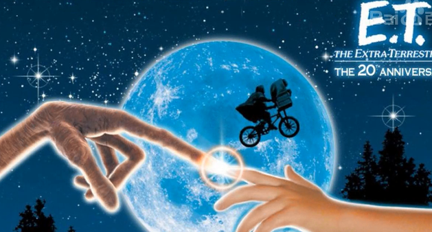

这个版块用来记录生活中的点滴，分享自己的日常小事...


2018.02.01 电影.科幻
前两天看了一部老电影：E.T.外星人 一部挺老的科幻片，
一个外星人被同伴们不小心留在了地球上，孤独无助的时候却幸运地被善良的小艾里奥特发现，
他瞒着母亲偷偷收留下了外星人并给它取名E.T.虽然语言上无法沟通，
但他们之间却建立起了能跨越一切外在障碍的情感联系。后面E.T要回家，但是遭到医疗队、警察们的追捕和研究，不过最后还是被小艾里奥特和他的
小伙伴们送回外星去了。里面的E.T很聪明，而且还拥有着特异功能，能够让受伤的人类马上痊愈，并且利用了一些小器材发出信号去联系外星的同伴来接回自己。
我很喜欢艾里奥特的妹妹，她特别可爱，然后得知E.T小外星人之后还能和它建立友谊~完美的配合他的哥哥们送回了E.T.虽然电影过去了蛮多年，但是豆瓣的评分还是蛮高的，
而且导演也是对外星人的形态和神情有着自己独特的见解，就像对外太空的一种向往吧~